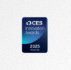

“A low-cost answer to a
problem that [the DoT] has
been working on for
decades.”
Born from
experience,
built for
resilience
Veteran Owned | U.S. Based
TERN wasnt built to chase AI trends; it was created to solve
a real problem. Co-founder and former special operator Brett
Harrison first saw the danger of contested GPS signals during
military operations in Afghanistan. Seeing those
vulnerabilities grow from daily frustrations to national
security risks, he partnered with AI entrepreneur Shaun
Moore, who led a team to built the worlds fastest facial
recognition system. Together, they united professional
navigators and top-tier AI engineers to create IDPS™, a
signal-independent navigation system born from lived
experience, not theory. That foundation, paired with a culture
of creative empowerment and mission-first thinking, has
enabled TERN to deliver a combat proven and U.S.
Department of Transportation tested, infrastructure-free
alternative to GPS that is already reshaping how the world
navigates.
TERN’s Executive Team

Shaun Moore
SEO & Co-founderBrett Harrison
president & founder.Manuet Seelause
Chief technology OfficerBrett Harrison is a senior technology executive and former Navy SEAL officer with TS/SCI clearance, bringing real-world navigational, operational and leadership experience to TERN. He scaled BlockCap Inc. from a $200 million valuation to over $1.4 billion, led the acquisition of Radar Relay, and executed a $4 billion merger with Core Scientific resulting in a NASDAQ listing. He also founded Nexus Medical Labs and Verify DX, introducing automation to complex diagnostics, and managed hundreds of millions in assets as COO of EHB Companies. He is an alumnus of the United States Naval Academy and Harvard Business School, now driving strategic growth at TERN, focused on resilient infrastructure and national security.
TERNs Advisory Board
Stan is a navigation technology pioneer known for transforming how we, and our vehicles, find our way. He co-founded Etak, where he developed the first commercial in-car navigation system, and Sportvision, where he led the development of broadcast innovations like the yellow first-down line in football. A National Inventors Hall of Fame inductee and record-setting offshore navigator, Stan brings decades of experience in resilient positioning systems to TERN as we build the next generation of AI-powered, satellite-free navigation.
AWARD

finalist| U.S. Army xTechOverwatch competition
Award|U.S. Army2050 Climate KIC Accelerator selection
Award|Cimate KIC

2025 Honoree, Vehicle Tech & Advanced Mobilti
Award|CES2025 finalist, smart Cities Transportation & Sustainability
Award|SXSW
2024 AI Solution of the Year
Award|Autotech2024 Honoree, Best Transportation Design
Award|Fast Company2024 Honoree, Best Transportation Design
Award|Fast Companycare for test drive?
The best way to see how
well IDPS™ works is to
try it yourself